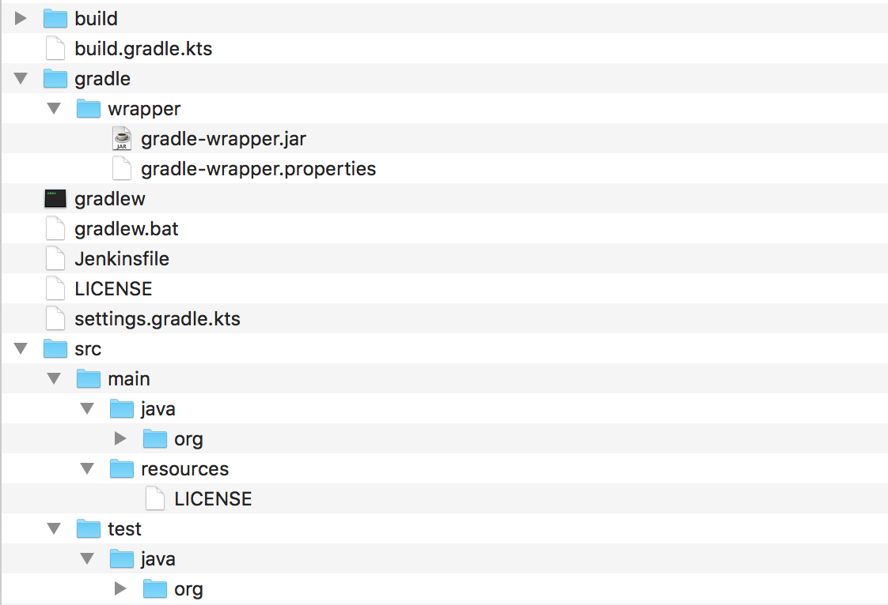
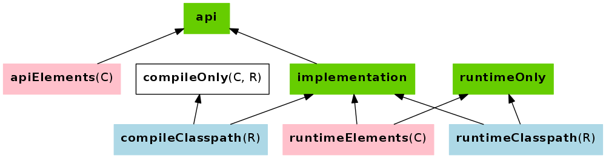

speaker {
name 'Cédric Champeau'
company 'Gradle Inc'
oss 'Apache Groovy committer',
successes 'Static type checker',
'Static compilation',
'Traits',
'Markup template engine',
'DSLs'
failures Stream.of(bugs),
twitter '@CedricChampeau',
github 'melix',
extraDescription '''Groovy in Action 2 co-author
Misc OSS contribs'''
}Je passe à Gradle Maturité, performance et plaisir!
Cédric Champeau (@CedricChampeau) & Louis Jacomet (@ljacomet), Gradle Inc.
Who are we?
speaker {
name 'Louis Jacomet'
company 'Gradle Inc'
past 'Terracotta / Ehcache',
'Freelance consultant',
failures Stream.of(bugs),
twitter '@ljacomet',
github 'ljacomet',
extraDescription '''Not fully figured out
how to stay out of management?!?'''
}What is Gradle?
Gradle’s purpose
Gradle is a build and automation tool.
JVM based
Implemented in Java
100% Free Open Source - Apache Standard License 2.0
Agnostic Build System
Java ecosystem
Groovy, Kotlin, Scala, …
Native ecosystem
C, C++, Swift, …
Android
Misc
Go, Asciidoctor, …
Gradle in figures
5.0M downloads / month
35 Gradle Engineers
300K builds/week @LinkedIn
Gradle Inc.
The company behind Gradle.
Build Happiness
Employs full time engineers
Providing Gradle Build Scans and Gradle Enterprise
(Gradle consulting, support, development services etc.)
(Training: online, public and in-house)
Gradle is hiring!
Fully distributed development team
Exciting project used by millions
Build tool team and Gradle enterprise positions
If anything you hear from now on sounds like a great problem to solve,
Talk to us!
Gradle Inc.
The company behind Gradle.
Build Happiness
Employs full time engineers
Providing Gradle Build Scans and Gradle Enterprise
Gradle consulting, support, development services etc.
Training: online, public and in-house
Objectives
Objectives
Get you started with Gradle
As a user needing to interact with a Gradle project
As a build author starting to use Gradle for your projects
Agenda
Anatomy of a Gradle project
Use Gradle
Concepts and plugins
Incremental build and tasks
Advanced configuration
Dependency Management
IDE integration
Caching
Gradle survival guide
Anatomy of a Gradle project
Gradle is based on a set of conventions.
Some inherited from the history of Java build systems:
src/main/javasrc/test/resources
Others brought by Gradle:
The name of the project is the name of the containing folder
A simple project

A multi project build

Demo: anatomy of a project
The build file
By default, named
build.gradlewhich can be configured.Describes what the build is about through configuration.
Companion files
settings.gradle: Configure the project(s) that compose the buildgradle.properties: Defines properties specific to the build, which can be overridden
Additional build artifacts
Directories:
buildSrc.gradlebuild
The Gradle Wrapper
Bootstraps Gradle for project contributors
Project controls Gradle version
Build scans
What is a build scan?
It is a permanent, centralized and shareable record of a build
It offers tons of insights into how your software is building
How to enable build scans?
Simply add
--scanto your build commandWill prompt you to accept terms of service
Or configure your build for it:
plugins {
id 'com.gradle.build-scan' version '2.0.2'
}
buildScan {
termsOfServiceUrl = 'https://gradle.com/terms-of-service'
termsOfServiceAgree = 'yes'
}Using Gradle
Invoking Gradle using the wrapper
./gradlew helloNote the implicit invocation from the project root. With Gradle, no need to navigate inside project directories. Instead, you can pass a specific task name and path to execute.
Invoking tasks
./gradlew [taskName...] [--option-name...]Where taskName is one or more tasks names, space separated.
Each task can also reference a specific task in a subproject:
./gradlew :server:testDiscovering tasks
./gradlew tasksWill list all the tasks defined by the project, with a description
Getting help on a task
./gradlew help --task <taskName>Will list all projects having the task and give some usage context.
Exclude a task
--exclude-taskor-xTo exclude one task from the execution graph
./gradlew build -x test| This will exclude the specific task and all tasks it depended upon |
Continue a build
--continueTo continue with the build even when a task fails
./gradlew test --continue| The dependents task(s) of the failed one will still not be executed. |
Continuous build
--continuousor-tRuns the tasks every time the input changes
./gradlew -t testUse <CTRL>-D to stop the build |
Logging
Gradle defines 6 log levels:
error,quiet,warning,lifecycle,info,debugDefault log level (
lifecycle) is minimalistic
Configuring logging
Command line flags allow to set a different level:
$ gradle hello -i
$ gradle -q helloWhen troubleshooting, info is usually enough, debug has a lot of output. |
Convention tasks
Gradle built-in plugins define a set of convention tasks.
These are used as as entry points to request execution of canonical project operations.
assemble task
This convention task indicates that all output producing tasks have to be executed.
check task
This convention task indicates that all verification tasks are to be executed.
build task
This convention task triggers assemble and check.
No task argument?
./gradlewThe above will invoke the help task by default.
However a project can define a set of default tasks to be run when it is invoked without a task argument.
defaultTasks 'assemble', 'test'Gradle daemon
By default, Gradle will start a background process to execute your builds.
This allows to have a warmed up JVM running your build instead of having a fresh one each time.
org.gradle.daemoncan be used to disable the daemonorg.gradle.daemon.idletimeoutcan be used to tweak the idle time
Parallel builds
Gradle can run tasks of decoupled projects in parallel
org.gradle.parallelcan be used to disable parallel modeorg.gradle.workers.maxcan be used to limit the number of workers used by parallel buildsDefaults to number of CPUs
Demo: using Gradle from CLI (demo-statistics)
Gradle construction guide
Base plugins
Plugin base
Adds tasks
Adds conventions
Provides some build structure
Base configurations
archivesA configuration that contains the production artifacts of a project
Has a matching
uploadArchivestask for uploading the artifacts ofarchives
Base conventions
Properties and defaults at project level:
archivesBaseNamethat defaults toproject.namedistsDirNamethat defaults todistributionslibsDirNamethat defaults tolibs
Base conventions (2)
Default values for archive tasks:
destinationDirwith defaults depending on the type of archive producedversionthat default toproject.versionbaseNamethat defaults toarchiveBaseName
Java Plugins: java-base
Adds model elements
Defines additional tasks
Extends the DSL with declarative elements, such as
SourceSet
SourceSet
Models a source code logical unit:
Input source files (Java, Groovy, Scala, …)
Input resource files (
*.properties,*.xml, …)Output class files
Compilation and runtime classpaths
Tasks for processing inputs to outputs
Java Plugins: java
Adds task instances
Defines a set of conventions
Defines default values for added tasks
Defines
mainandtestsource sets
Adds configurations
SourceSet conventions
Source:
src/<name>/<lang>Resources:
src/<name>/resourcesCompilation tasks:
compile<Name><Lang>Dependency configurations:
Compilation:
<name>ImplementationRuntime:
<name>Runtime
Naming conventions for main
The main part is ignored, having the resulting name respect camel case.
configurations {
implementation
runtime
}
compileJavaJava Plugins: java-library
Adds extra configurations
Express the difference in your dependencies:
The ones part of your API
The ones required at runtime by your implementation
java-library configurations

Demo: adding a source set
Plugin portal
Concepts
Gradle lifecycle
Configuration phase
Discovering projects
Build scripts evaluation
Model construction
Task graph construction
Gradle lifecycle (2)
Execution phase
Run tasks that are required by the build invocation
Demo: doLast
Lifecycle best practices
Do the minimum during configuration
At this stage, Gradle walks all configuration items to determine which need to be part of the execution
Concepts by example
What are the building blocks of a compile task for a Java project?
Tasks
It is the target of a build execution and does the work.
Task actions
task hello {
doLast { print "Let's have a great week!" }
}doLastadding actions to a task
Task type
task compileMe(type: JavaCompile) {
destinationDir "$buildDir/myDir"
//enable compilation in a separate daemon process
options.fork = true
//enable incremental compilation
options.incremental = true
}Provides declarative configuration
Task action is defined by the task type
Models what the build is about in terms of execution
What does compile do then?
Transform Java source files into class files.
Task inputs
Java source files
Source encoding
Compile options
Classpath
Task outputs
Class files
Importance of inputs / outputs
You can think of a Gradle task as a function.
Based on a set of inputs, you produce outputs.
And ideally, the same set of inputs results in the same outputs.
Inputs origin
Java source files
SourceSetconcept
Source encoding & compile options
Task configuration
Classpath
From associated configuration
Configurations
A configuration is a container of dependencies and produced artifacts.
A configuration can extend another one, inheriting its dependencies.
Dependencies
A dependency is a pointer to another piece of software required to build, test or run your project.
When declaring a dependency, you tie it to a Configuration.
In practice
configurations {
implementation
}
dependencies {
implementation 'org.slf4j:slf4j-api:1.7.25'
implementation project(':common')
}Constructing the classpath
Resolve the configuration
Resolve the graph of dependencies
Retrieve or build the dependencies
Build the classpath
Invocation chain
User requests
compileJava→ Build needs the compileClasspath
→ Build needs to resolve the
implementationconfiguration
Building the task graph
Gradle will arrange tasks in an execution graph during the configuration phase:
Each task to be executed is a node
Implicit and explicit relationships define the edges between nodes
No cycles are allowed
Dependency management
Dependency management engine
Gradle has its own engine
Supports Ivy, Maven and more
Aims at consistency
Doesn’t use
.m2by defaultLocal cache knows where a dependency comes from
Declaring repositories
Basics
repositories {
mavenCentral()
jcenter()
google()
}Declaring repositories
Uncommon
repositories {
maven {
url "https://my-repo/
}
ivy {
url "https://my-repo/
}
flatDir name: 'libs', dirs: "$projectDir/libs"
}Maven local
Should almost never use it
Mainly for Gradle/Maven interoperability
Dependency notations
dependencies {
api project(':core')
implementation "com.google.code.gson:gson:2.8.2"
implementation("org.ow2.asm:asm") {
version { prefer "6.1.1" }
because "Only version compatible with JDK 11"
}
testImplementation group:"junit", name:"junit", version:"4.12"
}Dependency versions
1.0: fixed, cached forever[1.0, ): dynamic, cached for 24h1.0-SNAPSHOT: changing, cached for 24hUse
--refresh-dependenciesto force update
Danger zone
dependencies {
api('dont.do.this.at:home:1.0') {
changing = true
}
}Resolution strategy
configurations.all {
resolutionStrategy {
failOnVersionConflict()
cacheDynamicVersionsFor(5, HOURS)
}
}Fixing dependency management issues
configurations {
compileClasspath.resolutionStrategy {
eachDependency { DependencyResolveDetails details ->
// specifying a fixed version for all
// libraries with 'org.gradle' group
if (details.requested.group == 'org.gradle') {
details.useVersion '1.4'
}
}
}
}Making sense of the mess
Talk Jeudi 19, 14:55 - 15:40, Maillot
Up to date and incremental tasks
Why does it matter?
Gradle is meant for incremental builds
cleanis a waste of timeTime is $$$
The incrementality test
Run a build
Run again with no change
If a task was re-executed, you got it wrong
Incremental build
A task is UP-TO-DATE iff:
Inputs have not changed
Outputs are still present and un-tampered
Change detection
Hash of input / output files
Hash of contents of input / output folders
Serialize input properties
Control change detection
--rerun-tasksbypasses up-to-date checksRunning at info level will give you insights in up-to-date calculations
Example: building a shaded jar
task shadedJar(type: ShadedJar) {
jarFile = file("$buildDir/libs/shaded.jar")
classpath = configurations.runtime
mapping = ['org.apache': 'shaded.org.apache']
}What are the task inputs?
What are the task outputs?
What if one of them changes?
Declaring inputs
public class ShadedJar extends DefaultTask {
...
@InputFiles
FileCollection getClasspath() { ... }
@Input
Map<String, String> getMapping() { ... }
}Declaring outputs
public class ShadedJar extends DefaultTask {
...
@OutputFile
File getJarFile() { ... }
}Annotation sensitivity
@InputFiles: File path or contents@Classpath: File contents only, order sensitive@CompileClasspath: Class file contents, limited to ABI@Input: Value change
Know why your task is out-of-date
Demo: up-to-date checking
Incremental task inputs
Know precisely which files have changed
Task action can perform the minimal amount of work
Incremental task inputs
@TaskAction
public void execute(IncrementalTaskInputs inputs) {
if (!inputs.isIncremental()) {
// clean build, for example
// ...
} else {
inputs.outOfDate(change ->
if (change.isAdded()) {
...
} else if (change.isRemoved()) {
...
} else {
...
}
});
}
}Incrementality gotchas
Adding a timestamp to a jar manifest will make the jar task always out of date.
What if you do want / need that? Maybe you could only do it for a release build.
Advanced configuration
Declarative vs. Imperative
The ability to have code inside Gradle build scripts is a powerful feature.
While it adds flexibility, abusing the feature leads to builds that are hard to understand.
Gradle extensibility
Define properties
Add extensions to existing objects
Allows built in domain objects to be extended, including Project.
Makes the build language extensible.
Gradle properties
Different levels
Matching different use cases
gradle.properties and command line
Define items that have a sensible default
org.gradle.parallel = true
deployUrl = https://example.com/defaultCan be overridden on the command line:
./gradlew -Dorg.gradle.parallel=false -PdeployUrl='https://example.com/custom'Project properties
Added to the
extcontainer
def getRevision = {
def cmd = 'git rev-parse HEAD'
try {
def proc = cmd.execute()
return proc.text.trim()
} catch (IOException) {
return 'Unknown'
}
}
ext.revision = getRevision()Extensions
class MyExtension {
String someProperty
}
extensions.create("myDSL", MyExtension)
myDSL {
someProperty = "someValue"
}Configuration rules
configurations.all {
println "Configuration $it.name"
}
tasks.withType(Jar) {
destinationDir = "somePath"
doLast { /* do something */ }
}
plugins.withType(IdeaPlugin) {
// Perform actions if plugin gets applied
}Implicit task relationships
Tasks can have implicit dependencies:
taskA.inputs = taskB.outputsjartask consumescompileJavaoutput
This is known by Gradle through task implementations.
The heart of the Gradle execution model.
Explicit task relationships
task generateCode
task compileJava
compileJava.dependsOn generateCodeAim for having implicit dependencies, based on proper modelling, instead of having to resort to explicit wiring.
Demo: implicit task inputs
SourceSet output
Source sets have an output property. It references:
Class files
Processed resources
task jar {
from sourceSets.main.output
}Script plugins
plugin.gradle
task taskFromPlugin() {
doLast { println "added by a script plugin!" }
}master.gradle
apply from: "plugin.gradle"Note: the script reference can be a URL
Binary plugins
Implementation of the
PlugininterfaceCan be bundled in
buildSrcCan extend the Gradle model
New task types, extensions, …
Build code management
Use script plugins to decompose build scripts
Enhances comprehension and allows for reuse
Modularize according to domain (integ tests) or role (user/build admin)
Encapsulate the imperative into plugins and custom tasks
Enhance the API of the Gradle domain objects
Add your own declarative elements
Gradle build cache
Cached tasks
It is the cross build level expression of Gradle efficiency.
Based on tasks inputs, Gradle can fetch the outputs from cache instead of having to run the task.
Usage scenarios
Local cache for faster
git bisectCI populated cache for faster morning builds of developers
Faster CI feedback by reusing common elements
Pull request jobs usually vary from master only in a few modules
Pre-requisites
Gradle up-to-date checks are working
Two subsequent invocations of the same build result in all tasks up-to-date
Tasks are declared cacheable
This is an opt-in support
Cacheable tasks
The benefit of getting the result from the cache only matters if the operation is expensive.
By default in Gradle compilation tasks can be cached, but not copy tasks for example.
Inputs / Outputs specifics
While the system is similar to up-to-date checks, a few things need to be considered in addition:
Relative vs. absolute paths
Since the goal of caching is across builds, absolute paths will differ
Enabling caching
Add
--build-cacheto your command lineConfigure
org.gradle.caching=trueingradle.properties
Configuring local caching
By default, a directory cache in the Gradle user home dir is used.
settings.gradle
buildCache {
local(DirectoryBuildCache) {
directory = new File(rootDir, 'build-cache')
removeUnusedEntriesAfterDays = 30
}
}Configuring remote caching
settings.gradle
buildCache {
remote(HttpBuildCache) {
url = 'https://example.com:8123/cache/'
}
}Demo: build cache
Conclusion
Gradle Enterprise
On premise build cache and build scan solution
Out of the box solution for distributed build cache
Improved build scan feature set
Searchable build history
Build comparison
Sessions at Devoxx BE
Improving Android Build performance
Thursday, 16:30 - 17:15 Room 3